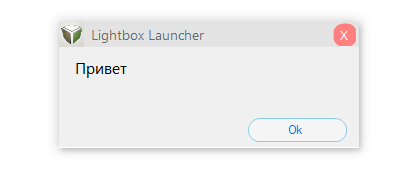
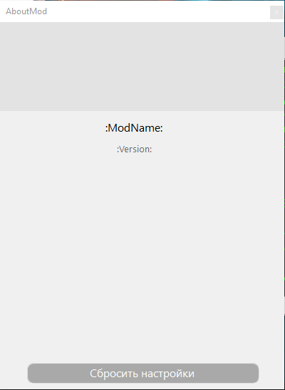

Classes
AlertForm - вывод сообщения пользователю.
arguments: (string content, string label = "Lightbox Launcher", Image Icon = null, Action _onSubmit = null, Action _onAbort = null)
Инициализация класса выглядит так: new AlertForm("Привет");
Также можно получить форму вот так: Form MyObj = new AlertForm("Привет");

Аргументы:
content - что выведет форма.
label - Заголовок формы, но вводить параметр необязательно.
Icon = иконка формы.
_onSubmit - действие при нажатии кнопки 'ОК' или 'Да'.
_onAbort - действие при нажатии 'Нет'.
AboutMod - Форма информации мода.
arguments: ()
Инициализация класса выглядит так: new AboutMod();
Также можно получить форму вот так: var MyObj = new AboutMod();

Методы:
SetName(string text) - Ставит Имя мода.
SetVersion(string text) - Ставит версию мода.
SetLogotype(string text) - Ставит изображение по пути к файлу.
SetLogotype(Image content) - Ставит изображение.
SetHeadColor(Color) - Ставит цвет шапки.
SetHeadColor(string text) - Ставит цвет шапки по имени цвета.
SetHeadColor(int r, int g, int b, int a) - Ставит цвет шапки.
SetBackColor(Color) - Ставит цвет формы.
SetBackColor(string text) - Ставит цвет формы по имени цвета.
SetBackColor(int r, int g, int b, int a) - Ставит цвет формы.
AddPanel(int height = 25) - Добавляет новую панель в форму.
AddButton(string text, int width = 350, int fontSize = 12, string fontFamily = "Segoe UI", string colorName = "black")
- Добавляет новую кнопку в форму.
AddLabel(string text, int fontSize = 12, string fontFamily = "Segoe UI", string colorName = "black") - Добавляет новый текст в форму.
AddToogle(string text, bool content, int fontSize = 12, string fontFamily = "Segoe UI", string colorName = "black")
- Добавляет новый toogle в форму.
AddCustomControl(Control custom) - Добавляет в форму переданный компонент.
Поля:
ClearProperties - Button "Сбросить настройки".
LBConsole - Консоль и дебаг.
arguments: ()
Методы:
Execute(string command) - Выполняет команду
AddString(string content) - Добавляет строку в список консоли
AddCommand(char symbol, string name, string description, Action|string[]| command) - Добавляет команду в список консоли
ToolButton - Кнопка инструмента.
Поля:
Bitmap Image { get; } - Текстура кнопки
Action OnClick { get; } - Событие, происходящее при выборе инструмента
Action OnDeselect { get; } - Событие, происходящее при выборе другого инструмента